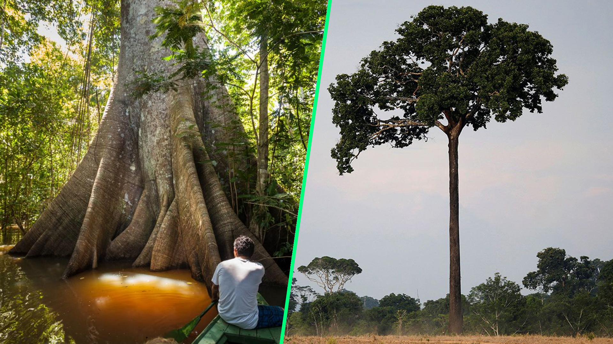
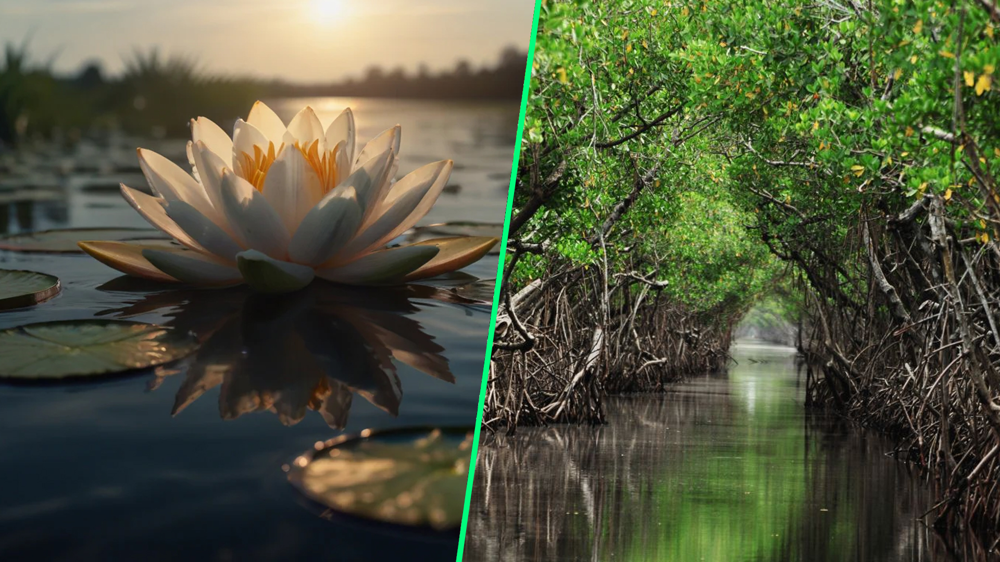
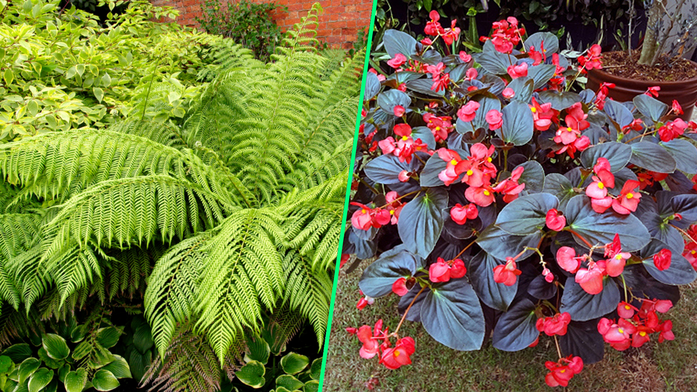
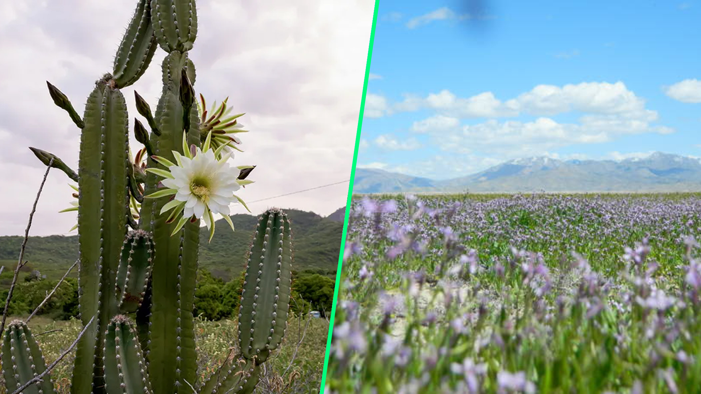
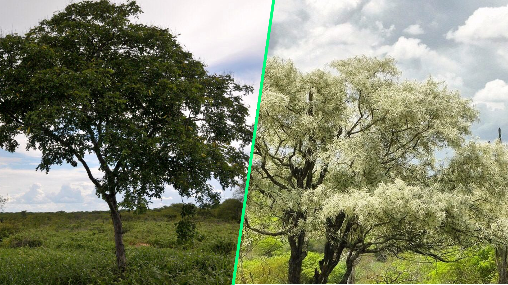

Como Elas Driblam Calor e Frio?
Descubra as táticas de sobrevivência e adaptação das plantas!

Por Marcelo Fonseca - 06 de novembro de 2024
As plantas são organismos incríveis, adaptados a diferentes áreas do mundo. Depois veremos os diferentes tipos de plantas, a sua evolução e como se adaptaram para sobreviver no seu ambiente. Também incluirei exemplos de plantas encontradas em regiões tropicais como o Brasil.
Plantas Terrestres
Plantas terrestres são plantas que crescem no solo, seja em florestas, campos ou cidades. Eles precisam absorver coisas como água, comida e luz solar.
Castanheira
É uma árvore autóctone da região amazônica, especialmente localizada em zonas da Amazônia brasileira, na Venezuela, Bolívia e em outras regiões da América do Sul. Trata-se de uma árvore imponente e bastante apreciada, tanto pela qualidade de sua madeira quanto pelo seu fruto, a castanha-do-pará, que é consumida globalmente.
Samaúma
É uma árvore imponente, característica das florestas tropicais da América do Sul, particularmente da Amazônia, embora possa ser encontrada em diversas regiões das Américas, assim como na África e na Ásia. Reconhecida por seu tamanho impressionante e pela beleza de sua copa, a samaúma é tida como uma das maiores árvores da floresta tropical, podendo alcançar até 60 metros de altura.
Características Evolutivas
→ Folhas Largas: Em climas tropicais, as folhas largas ajudam a capturar a luz solar para a fotossíntese, que é essencial para a vida das plantas.
→ Raízes Profundas: Algumas plantas desenvolveram raízes que alcançam profundamente o solo, dando-lhes acesso à água que outras plantas não conseguem
Plantas Aquáticas
As plantas aquáticas vivem em áreas submersas ou submersas, como lagos, rios, pântanos e pântanos. Necessitam de adaptações especiais para sobreviver em ambientes aquáticos, com baixo teor de oxigênio e alta salinidade ou acidez, dependendo do ambiente.
Vitótia-Regia
Esta planta é um exemplo de planta aquática que vive em águas rasas. Suas grandes folhas flutuantes suportam o peso de pequenos animais e mantêm a planta acima da água para receber luz solar.
Manguezais
As raízes dos manguezais geralmente crescem em áreas salgadas e lamacentas. Suas raízes aéreas, chamadas raízes aéreas, retêm ar mesmo quando o solo está saturado de água.
Características Evolutivas
→ Folhas e riachos flutuantes: Plantas aquáticas como nenúfares têm folhas que flutuam na água, permitindo-lhes capturar a luz solar, que é essencial na fotossíntese.
→ Raízes de Sal: As plantas de mangue desenvolveram mecanismos para extrair grandes quantidades de sal de suas folhas, permitindo-lhes viver em solo salgado.
Plantas de Sombra
As plantas de sombra crescem em locais com menos luz, como sob árvores grandes ou nas bordas de florestas densas. Como há menos luz solar, eles precisam ser trocados para aproveitar melhor a luz.
Samambaias
Samambaias são encontradas em locais sombreados, como em florestas. Suas folhas são largas e finas, perfeitas para captar qualquer luz que penetre na densa vegetação.
Begônia
Begônia é uma planta popular na sombra, adaptada a condições úmidas e pouco iluminadas. Suas folhas grandes e carnudas ajudam a captar o sol.
Características Evolutivas
→ Folhas grandes e finas: Plantas sombreadas desenvolvem folhas para permitir a entrada de mais luz, mesmo usando a luz que atinge o topo da árvore.
→ Adaptação de Pigmentação: Algumas plantas na sombra possuem pigmentos especiais que ajudam a capturar a quantidade certa de luz.
Plantas de Deserto
As plantas do deserto precisam lidar com a falta de água, calor extremo e solo pobre. Para sobreviver, eles evoluíram para conservar água e suportar altas temperaturas.
Cactos
Os cactos têm caules suculentos que podem reter muita água. Eles também possuem espinhos que ajudam a reduzir a perda de água por evaporação e protegem as plantas dos herbívoros.
Alfafa do Deserto
Uma planta tolerante ao calor e à seca com folhas pequenas e vermifugadas que ajudam a reduzir a perda de água.
As flores são responsáveis pela reprodução da planta. Elas estão presentes apenas no grupo de plantas mais evoluído chamado de angiospermas. As flores podem ser hermafroditas ou monóicas quando possuem ao mesmo tempo as estruturas femininas (carpelos) e masculinas (estames). Um exemplo desse tipo de flor são as tulipas, que também podem ter suas estruturas separadas em flores diferentes, chamadas de dióicas, como ocorre com o mamoeiro.
Adaptações Evolutivas Específicas
A evolução das plantas inclui uma série de adaptações interessantes que ajudam a resolver problemas ecológicos específicos:
Espigas em cactos: Adaptações de espinhos e folhas. Desempenham diversas funções: além de proteger as plantas dos herbívoros, ajudam a reduzir a evaporação e a criar ar ao redor das plantas, o que reduz a perda de água.
→ Folhas largas em plantas tropicais: Nas florestas tropicais, a competição pela luz é maior e as folhas largas ajudam as plantas a capturar luz para a fotossíntese. Além disso, a estrutura foliar de muitas dessas plantas permite que a água flua rapidamente, evitando a estagnação da água e os danos causados por fortes chuvas.
Características Evolutivas
→ Espinhos: A maioria dos cactos não possui folhas, mas possui espinhos, que não apenas reduzem o fluxo de água, mas também protegem a planta de predadores. Essa mudança é uma forma de sobrevivência em ambientes desérticos.
→ Armazenamento de água: As plantas do deserto, como os cactos, evoluíram para armazenar água em seus caules grossos e doces, permitindo-lhes sobreviver a longos períodos sem chuva.
Plantas Típicas do Nordeste
O Nordeste do Brasil possui uma grande diversidade de plantas nativas, adaptadas ao clima semiárido da região, mas também ao clima mais úmido do litoral. Aqui estão algumas plantas nativas da região que são emblemáticas e importantes para a biodiversidade local:
Catingueira:
Uma planta típica da Caatinga, conhecida por sua resistência à seca. Suas flores são de um amarelo vibrante e a planta é importante para a regeneração do solo em áreas degradadas.
Jurema
Muito comum na Caatinga, a jurema é uma planta com propriedades medicinais e também é utilizada na fabricação de artesanato. Sua casca e raízes são tradicionalmente usadas em curas e rituais.